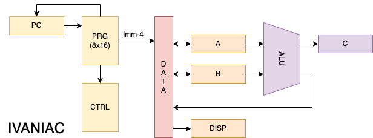
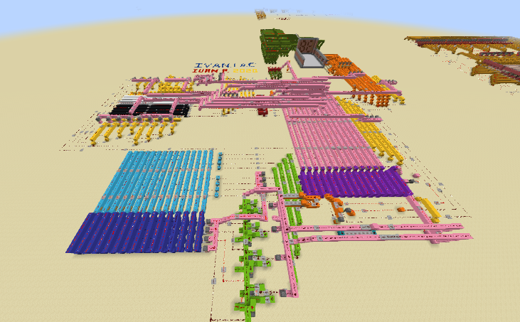

Techno-Sorcery
"Man is still the most extraordinary computer of all."
My first CPU, a 4-bit Harvard architecture machine built in Minecraft. It was named after my old high school nickname, "Ivan".
IVANIAC
The IVANIAC is my first ever CPU architecture, designed and built in Minecraft using redstone. With redstone, you can build working logic gates that are analagous in function to their real-life counterparts and, by extension, put together a computer.
Links
YouTube demo and explanation
World download
Architecture

The IVANIAC is a 4-bit computer, meaning it can operate on unsigned integers ranging from 0 to 15. It is a Harvard architecture machine, which means that its program memory is separate from data memory. The IVANIAC lacks a dedicated RAM data store but, rather, has two general-purpose registers-- A and B. Both of these registers act as ALU inputs, and can freely read and store from/to each other. There's also a 4-bit display register, which is connected to a 7-segment display, and a 4-bit program counter.
The ALU can perform four functions on the values of A and B: ADD, AND, OR, and XOR. Calculated values are then latched into a sum register, from which they are stored at their destination.
Instruction set
There are 16 bytes of memory, of which the first half of each byte is an instruction opcode, and the last half is an immediate integer or an address depending on the instruction.
- 0001xxxx - MOV xxxx TO A
- 0010xxxx - MOV xxxx TO B
- 00110000 - MOV B TO A
- 01000000 - MOV A TO B
- 01010000 - ADD B TO A
- 01100000 - ADD A TO B
- 01110000 - AND B TO A
- 10000000 - XOR B TO A
- 10010000 - OR B TO A
- 10100000 - MOV INPUT TO A
- 10110000 - MOV INPUT TO B
- 11000000 - MOV A TO DISP
- 11010000 - MOV B TO DISP
- 1110xxxx - JMP TO xxxx
- 1111xxxx - JMP TO xxxx IF C != 1
In the demo I uploaded to YouTube, the machine was shown calculating fibonacci numbers. This program alternated between adding the two registers to each other, moving them to the display register, and performing a conditional check at the end to see if the carry bit wasn't on (if it were, it would jump back to the beginning and restart the program).
Background

I started building the IVANIAC back in late 2019, when I was in 10th grade. I had already been studying computer engineering in my free time for a few months, though not as religiously as I do now. Since I didn't really know much of anything, the project quickly fizzled out. Fast foward to April 2020, and I had an almost unlimited amount of free time on my hands due to the quarantine. I also knew a lot more than I had when I started the project. I started working on it again and, within a week, I had finished.
I'm still amazed that it worked at all, considering I started without any clear plan or schematic, and came up with everything as I went along. However, it's clear that the design features several deficiencies as a result of my naivety. If I could go back and redesign it, I would make use of one of a two phase clock for control timing, a feature which is virtually ubiquitous in my CPU designs. I would also use a RISC-style design instead of making a bloated and complicated instruction decoder.
Despite all of its inherent quirks and inadequicies, I'll always be proud of building the IVANIAC since it was my first-ever custom CPU architecture. And, of course, because it has served as an essential stepping-stone for every design I've made since.
© Hayden Buscher ~ 2022